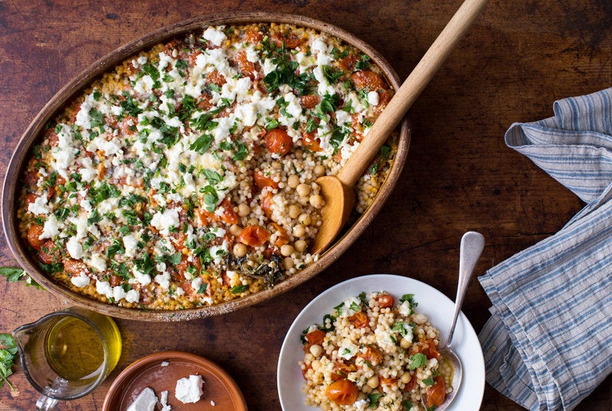

Couscous with Creamy Feta and Chickpeas

Description
Baking pearl couscous with chickpeas, roasted tomatoes and garlic results in a one-pan vegetarian meal that’s cozy and very savory, especially if you use a flavorful stock for cooking.
Soft and almost porridgelike in texture, it satisfies the same urge as polenta or risotto. Lemon zest and fresh herbs make it bright, while feta, added at the end, gives the whole thing a creamy richness.
Save leftovers to bring to work for lunch the next day; they pack up perfectly. If you feel like you need more vegetables here to round out the meal, serve this on a bed of baby spinach, some of which will wilt on contact with the hot couscous.
Ingredients
- 1 pint grape tomatoes, halved
- ¼ cup sliced scallions
- 2 tablespoons extra-virgin olive oil, plus more for drizzling
- 1 tablespoon balsamic vinegar, plus more for serving
- 2 fat garlic cloves, finely grated or minced
- 1½ teaspoons kosher salt, plus more as needed
- ½ teaspoon black pepper, plus more for serving
- 3 oregano, rosemary or sage sprigs
- 2 cups vegetable stock or water
- ⅓ cup chopped cilantro, dill or parsley, plus more for serving
- ½ teaspoon finely grated lemon zest (from ½ lemon)
- ¾ teaspoon ground cumin
- 8 ounces pearl couscous (1½ cups)
- 1(15-ounce) can chickpeas, drained and rinsed
- 1 cup feta, crumbled (about 4 ounces)
- ⅓ cup freshly grated Parmesan (1½ ounces)
Steps
- Heat oven to 450 degrees. In a 9-inch baking dish, cake pan or gratin dish, toss together tomatoes, scallions, 2 tablespoons oil, 1 tablespoon vinegar, garlic, ½ teaspoon salt, pepper and oregano sprigs. Roast until tomatoes are tender, about 15 minutes.
- While tomatoes roast, heat the stock until it boils, then stir in remaining 1 teaspoon salt, adding more to taste. (You want a well-seasoned broth here to flavor the couscous.) Stir in cilantro, lemon zest and cumin.
- Remove tomatoes from oven and fold in couscous, chickpeas and hot stock mixture. Cover pan tightly with foil, and return to oven for 20 minutes.
- Remove foil and fold in about 3/4ths of the feta (save the rest for garnish) and Parmesan. Bake uncovered until feta starts to melt, another 5 minutes.
- To serve, pull out and discard herb sprigs if you like, and spoon couscous into bowls. Top with remaining feta, lots more herbs, pepper and a drizzle of olive oil and balsamic vinegar.